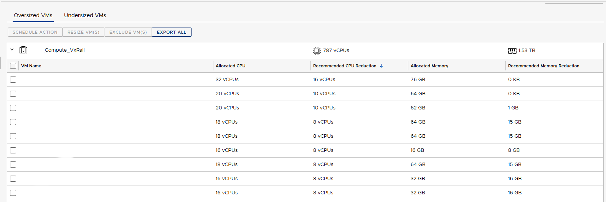
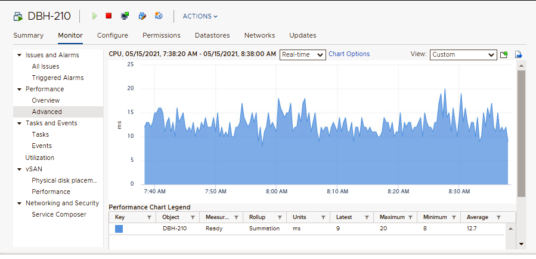
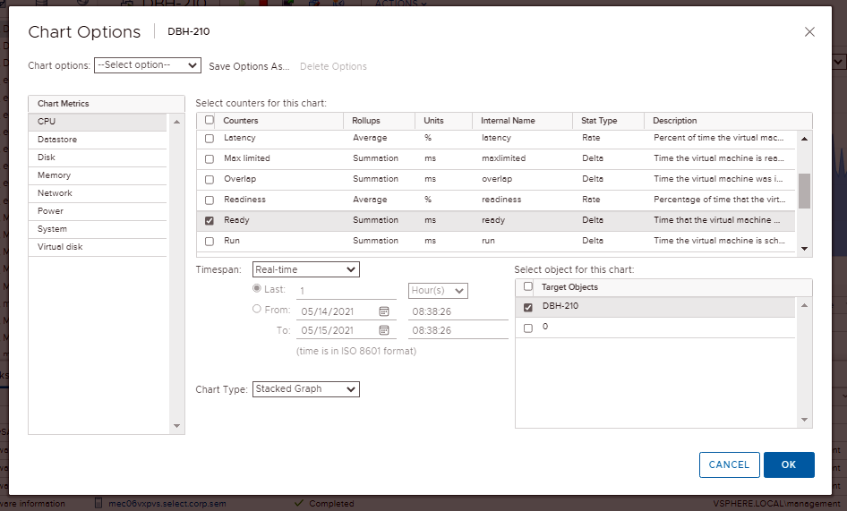
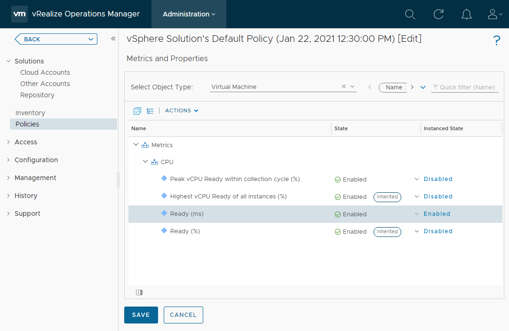
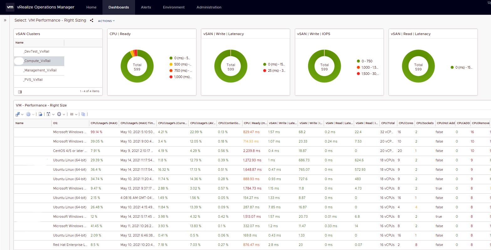
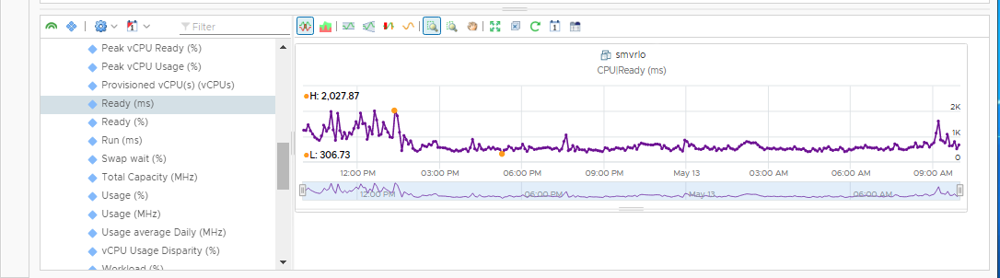
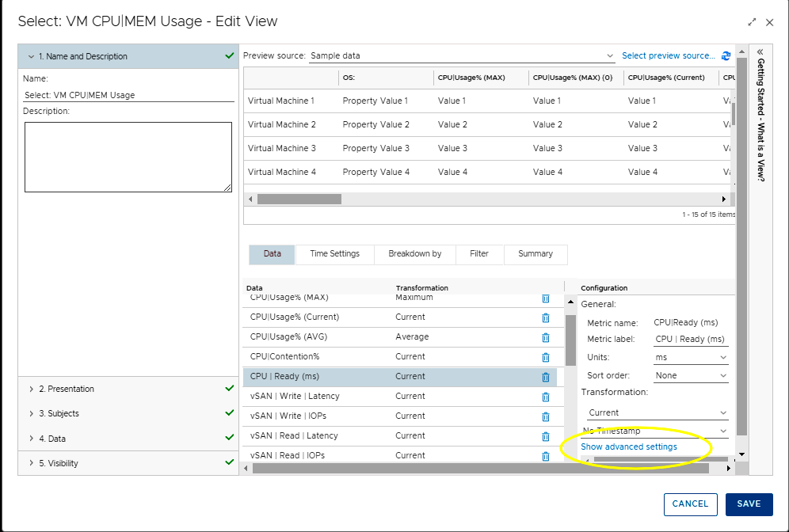
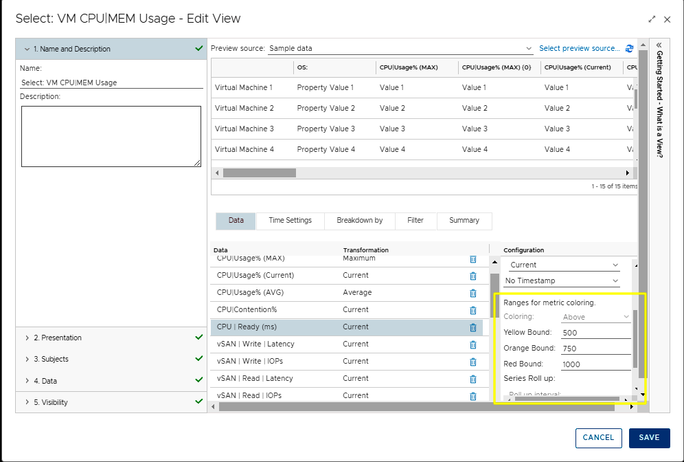
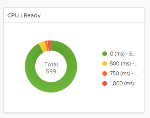

How vRealize Operations can help with Right Sizing VMs

Using vROPS Data to help show APP Owners Proper VM Sizing:
vRealize Operations does a good job to show you what the correct number for vCPU/Memory settings should be based on monitoring history. But instead of showing APP owners a screen that just shows what the current VM vCPU/Memory settings are and what the new settings "Should" be, I wanted to show the real data that proves why these changes should be made. It can still be hard for people to understand that taking away a VM resources can make performance better. If a mechanic told you to replace a v-8 engine in a vehicle with a 4 cylinder to get more performance, would you believe them? Probably not!
vROPS Right Sizing does not just show you what vCPU to remove to make a VM performance better. If a VM requires more vCPU resources there is a Metric CPU|Add that can be very useful.
vROPS Right Size Screen:

In vCenter if you look at the performance of a VM one of the options is to show CPU Ready|State (ms). I think this is a metric that you can show to an APP Owner and they can understand why this is important.


When I looked at vROPS OOTB (Out of the Box) the VM CPU Metric CPU|Ready (ms) was not being collected. I wanted to be able to show the CPU Metric CPU|Ready (ms) in a Right-Size/Performance Dashboard to show APP Owners this value.
1. Administration:
1. Policies.
1. Select your Default Policy.
1. Edit Policy.
1. Select Object Type: Virtual Machine
1. Filter for the word Ready.
1. Expand the metrics/CPU.
1. You will see Ready (ms) Disabled.
1. Change State and Instanced State to Enabled.
1. Save
1. See the (2) screen shots below.

Here is a vROPS Dashboard that I created to show APP Owners Performance information and Right Sizing information in a "Single Pane of Glass". A question the APP Owners always ask is WHY should we take resources away from a VM to make the performance better. If you look at the Column CPU|Remove and then look at the column CPU|Ready (ms), the CPU|Ready (ms) is much higher on VMs that are NOT Right Sized.
In one Dashboard I am showing several CPU performance metrics, vSAN performance metrics, CPU configuration (Counts/Hot ADD) and Right Sizing. I like to be able to look at all these metrics at the same time. Nice to be able to see if there is a relationship between performance, latency and Right Sizing. Does CPU performance affect the vSAN performance? Here is a VM that CPU|Remove is 0 and the CPU|Ready (ms) is much lower. Why is that?
Dashboard Screen Shot:

VM Names were removed from screen Shot
Click here to Download Dashboard and Views from VMware Code Web Site
This metric chart is showing a VM that had 12 CPU. vROPS recommended that the CPU count be 10. Before VM CPU count was changed to 10 you can see the CPU|Ready (ms) was running between 1500 - 2000 (ms). After the VM CPU count was changed to 10 you can see the CPU|Ready (ms) was running between 500 - 600 (ms). If you would do this across 100s of VMs in a cluster you would see even more performance gains because then the "Noisy Neighbors" would not be as Noisy.
- CPU|Ready (ms) should be 1000 or less for best performance
- CPU|Remove - I like to keep this at 2 or less. For some applications this can be trial and error.
- CPU|Add - I like to keep this at 0. Make sure the VM is sized with enough resources. Don't under size VMs. This will keep the APP Owners Happy!
CPU ready time is a vSphere metric that records the amount of time a VM is ready to use CPU but was unable to schedule physical CPU time because all the vSphere ESXi host CPU resources are busy. CPU ready time is dependent on the number of VMs on the host and their CPU loads. It is normal for a VM to average between 0–50 ms of CPU ready time; anything over 1000 ms is considered to lead to VM performance problems.
VMs that are configured with multiple vCPUs will suffer from an increased amount of ready time than compared to VMs with fewer vCPUs configured. Ready time increases as the VM needs more vCPU resources to be made available at the same time and, therefore, may have to wait for extended times for all the required vCPUS to be free to be made available to the VM with more vCPUs.
that helps you optimize CPU Settings.
- Add Color to the list data to make poor performance values catch your eye. (I used Red)
- Use Donut Charts to show some of the metrics that you feel are more important.
To add color to List View values, use Show advanced settings for a metric:


Enter the metric values when you want the color to change:

I like using Donut Charts in Dashboards. You can show a lot of data in a small amount of screen space. Using colors also catches your eye quickly when there are issues:

When I write about Automation I always say there are many ways to accomplish the same task. Monitoring is the same way. I am showing what I felt was important to see but every organization will be different. Add/Remove columns in the Dashboard to suite you needs. There is no right or wrong way to monitor. Maybe other metrics make more sense to you. What is important with monitoring is don't install vRealize Operation and not use it. Don't make vROPS Shelfware! This is a GREAT Tool that shows you so much information about your virtual environment. And it keeps getting better...